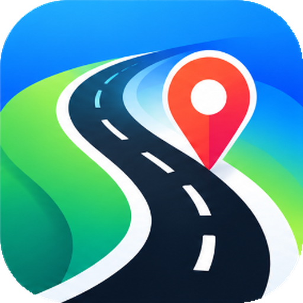

TrafficSense design
Every screen and component as its own file. Developers: read BUILD_SPEC.md first.
Screens
- Loadingscreens/01-loading.html
- Welcomescreens/02-welcome.html
- Launch flow (prototype)screens/03-launch-flow.html
- Homescreens/04-home.html
- Live mapscreens/05-live-map.html
- Plan routescreens/06-plan-route.html
- Place pickerscreens/07-place-picker.html
- Report a hazardscreens/08-report.html
- Sign inscreens/09-sign-in.html
- Create accountscreens/10-create-account.html
- Mescreens/11-me.html
- Journeysscreens/12-journeys.html
- Authorityscreens/13-authority.html
- Privacy & legalscreens/14-privacy-legal.html
Components
- Components & tokenscomponents/components-and-tokens.html
- Mapcomponents/map.html
- Navigation barcomponents/nav-bar.html
Specs
- Buttons specspecs/buttons.html
- Motion specspecs/motion.html
- Navigation bar specspecs/navigation-bar.html
- Spacing, radius & type specspecs/spacing-radius-type.html
Logo & tokens
- Animated logo (SVG)logo/trafficsense-logo-animated.svg
- Static logo (SVG)logo/trafficsense-logo.svg
- Original icon (PNG)logo/trafficsense-icon-original.png
- Design tokens (CSS)tokens/tokens.css
- Design tokens (JSON)tokens/tokens.json